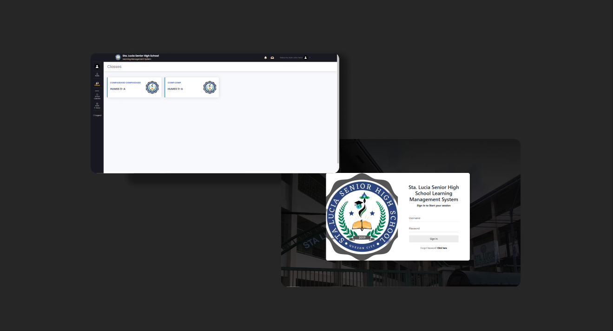
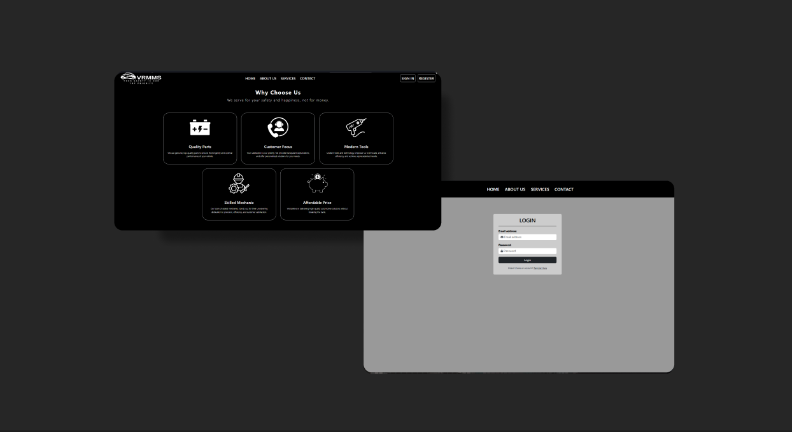

Recent Projects
Crust & Rolls Sushi Ordering Website
Lead Developer
Developed a web-based sushi ordering system using PHP, HTML, CSS, Bootstrap, MySQL, and JavaScript, featuring an administrator Content Management System (CMS) for managing orders, customers, and menu items.
Sta. Lucia Senior High School LMS (SLSHS LMS)
Lead Developer
Designed and developed a user-friendly website to support online learning that fits senior high school curriculum grading system. Programming language utilized for this project is PHP, mixed with HTML, CSS, Bootstrap, MySQL, and JavaScript.

Vehicle Repair and Maintenance Management System
Co-developer
Co-developed a website using PHP, HTML, CSS, JavaScript, and MySQL that helps clients communicate and request services from a vehicle repair shop, and enables admins to manage requests and tasks. Handled the back-end functionalities of the system.
